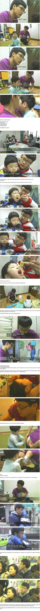

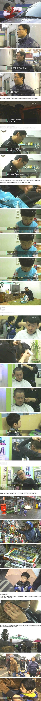

운동선수들 시간은 아주 대단하신 시간이셔서 군대까지 면제해주고 주유소 알바해가면서 동생키우는 사람 시간은 보잘것 없는 나라에 도움도 안되는 시간이라 군대감? 후자야말로 나라에서 세금들여 해야할일을 개인이 대신해서 하고있는데 면제 해줘야되는거 아닌가?
대한민국에 지금도 군면제가 간절한 아니 입영연기라도 되길 바라는 진우들이 저런 퍼포먼스보면 무슨 생각이 들까?



운동선수들 시간은 아주 대단하신 시간이셔서 군대까지 면제해주고 주유소 알바해가면서 동생키우는 사람 시간은 보잘것 없는 나라에 도움도 안되는 시간이라 군대감? 후자야말로 나라에서 세금들여 해야할일을 개인이 대신해서 하고있는데 면제 해줘야되는거 아닌가?
대한민국에 지금도 군면제가 간절한 아니 입영연기라도 되길 바라는 진우들이 저런 퍼포먼스보면 무슨 생각이 들까?
나도 그건동의함 완전 말도안되는 소리라고 까진 생각하지 않지만 바로 시행은 어려우니 여성 훈련소 만들어서 여자들도 4주던 8주던 기본훈련 받고 공익처럼 다른 근무로 돌리는 거라도 했으면 좋겠음
동시에 이걸로도 아주 개지랄할것도 알고있고
아무도 피해 안보고 돈도 안드는 군가산점도 남녀차별이라고 없애버렸는데
나라에서 평생책임까진 아니더라도 적어도 전역자들 10년정도는 혜택주는게 도리로서 당연한게 아닌가 싶음.
전역증들도 군병원 찾아가면 무료까진 아니더라도 많은 부분 지원해주고
지금은 간부들만 예비 전역자들 한해서 직업학교 운영하고 연계채용 지원하고잇는데 이게 병사들한테도 확대가 되었으면 좋겠음.
오해를 하고 있는게 있는거 같은데 난 군면제 혜택에 대해서 찬성한적 없어.
단순히 저걸 박탈하고 끝내는 거에 대해서 반대하는거고 본질을 보자는거지
그냥 군대 연기하게만 해주면 됨ㅋㅋ 피지컬도 일반인보다 좋은데 36살이후 복무해도 감지덕지지
그놈의 찬란한 20대 ㅋㅋㅋ
페미밀어는 나거한에서 보상과 대우?
생각이 있으면 지금이라도 사과하는 마음을 담아 입대해라.
입대 안하면 그냥 분위기상 마음에도 없는 사과하는 것 뿐.
이를 발판으로 운동놀이 면제 폐지 하자
솔직히 군면제 너무 신나겠지. 어린 마음에 그거 자랑하고 싶은 마음 아주 넘쳤겠지. 쟤들한테 짜증이 나는 것과 별개로 진짜 객관적으로 금메달 군면제가 이 시대에도 꼭 필요한지 논의해야함
전역모 들고간거야? 메달따면 인증하려고?
팬이 줫데
지들끼리 유쾌하게 즐기고 말았으면 괜찮았을텐데
그걸 인스타에 올려서 셀프 박제를 했네
옛날엔 생계유지 안되면 장남 면제 아니였음??
엄마 살아있고 돈 벌 아빠 안계시면 되었던걸로 기억하는데... 아빠 살아있고 동생은 친동생이 아니라서 안된건가
이젠 시각장애인도 어떻게든 데려가려고 하던데?
에바야
너무 몰고간다
힘든 사람은 어디든있는거임
그냥 철없는 새끼 인성좆같네 라고 욕해야할걸
군면제 폐지니 어떻니.. 방향이 잘못된거같은데..
무사히 전역해서 행복하게 살고 있었으면 좋겠다
밑에짤 ㅅㅂ 팬티노출이네 ㅋㅋ
태우도 군대갈 나이됐겠다
국방의 의무가 나이롱도 아니고 왜 운동선수 면제를 해줌? 신성한 국방의 의무를 왜 메달딴다고 경감해주냐는거임. 그리고 그럴거면 하이닉스 삼성 SM JYP 등등 국위선양하는 기업은 왜 안해줌? 걍 군면제는 없애야됨. 다해주면 된다고? 국방의 의무가 무슨 계층에 따라 차등대우하는 의무임? 가불기임 ㅋㅋ 무슨 체육인들은 그나이에 가면 청춘이 아깝다하는데 국민들은 안아까워서 가는거?
(연봉 수십억)
면제까지 시켜줌
(리얼 어려운 사람들)
죽던말던 끌고감
키야~ K식 인생 행복 몰아주기
개좆병신 나라 ㅋㅋ
없애자 이글보니 맘이 확 돌아서ㅡ섯다
운동 신경 재능을 타고난 운 좋은 애들이 왜 금메달 땄다고 병역 혜택을 줘야되는데
사실 머리속으로는 여자들이 군대가는게 존나 비현실적이고 비실용적이라는건 알고는 있자나
그래서 서로 윈윈하는 방법을 고심을 해봤는데 대의명분도 충분하고 어거지로 납득 가능할만한 방법을 예전에 떠올려보긴했음. 우리나라는 전시 국가니까 여성들도 20대부터 40대까지 매년 민방위교육과 교련수업을 강제적으로 시키는거지
솔직히 전시국가의 국민이라면 남녀노 CPR정도는 할 줄 알아야 된다고 생각함.
근데 이거 떠나서 난 군대의 병사와 전역자들의 처우 개선에 대해서는 다른 곳에서 예산을 빼더라도 제도적으로 고치고 바꾸는게 맞다고 생각함.